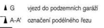
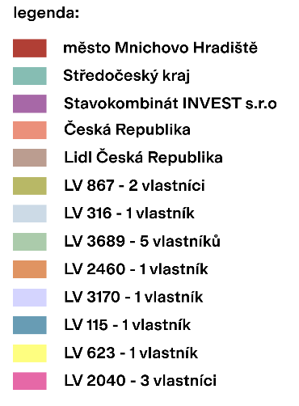

Návrh a majetková mapa: co převod skutečně obsahuje
Zadáním je doplnit obě vybrané stránky do živé mapy, zachovat legendy a vyzkoušet 3D návrh se zdrojovou podlažností. Výstup umožňuje porovnávat původní list, odvozené plochy a modelovací předpoklady při přípravě rozvahy a dohod.
Převedeno je 96 půdorysných hmot návrhu a 21 barevných komponent majetkové mapy. Nejde o počet samostatných budov ani parcel. U 41 hmot jsou NP přečtené ze zdroje; u 55 nejsou doložené. Aktuální vlastnictví není tímto převodem ověřeno.
Otevřít 3D návrh · Otevřít mapu · Manifest převodu
Zdroje a legendy
Podkladem je původní S003 · zadání, 15 stran; geometrie pochází výhradně ze stran 8 a 10. Zdrojové rastrové panely i kontrolní součty jsou uchované v balíčku. Použité přepisy zůstaly beze změny.
- Strana 8: původní situační návrh 984 × 1368 px. Zachována je legenda vjezdu do podzemních garáží a podélného řezu.
- Strana 10: majetkový panel 824 × 793 px a samostatný původní obrázek legendy 370 × 502 px; všech 13 kategorií je zastoupených v exportu.
- S040 slouží pouze jako srovnání barevné legendy. Obsahuje jinou variantu školy / sportoviště a jiný údaj o roku. Jeho geometrie nebyla použita jako náhrada návrhu ze S003.
Originální legenda strany 8

Originální legenda strany 10

Umístění a přesnost
Strana 8 byla registrována na katastrální kresbu ČÚZK pomocí 27 bodů v okolní existující kresbě, mimo návrhové plochy. Sedm kontrolních bodů mělo podmíněnou digitální RMSE 0,36 m. Body byly vybrány v okolí předběžného řešení; nejde o nezávislou geodetickou kontrolu ani o přesnost hranic budov.
Strana 10 byla registrována vůči dříve umístěnému S004. Kontrolní RMSE je 1,63 pixelu rodičovského obrazu; nezahrnuje chybu původní registrace S004. Absolutní polohová a tematická přesnost obou vrstev zůstává nevyčíslená.
Transformace pracují v EPSG:5514; výstupní GeoJSON je RFC 7946 v pořadí délka / šířka WGS84. Rastrové náhledy jsou přepočtené pro webovou mapu. Po transformaci jsou vektorové souřadnice stabilizované mřížkou 10⁻⁹ stupně (přibližně 0,1 mm); tato numerická úprava nezvyšuje skutečnou přesnost zdroje. Nevhodné zkolabované registrační modely byly odmítnuty a zaznamenány.
Jak vznikly plochy
U návrhu byly oddělené barevné výplně, provedená vizuální kontrola a sedm ručních oprav fragmentovaných / chybějících obrysů. Podlažnost byla přepsána z popisků jednotlivých hmot. Původní pixelové obrysy, ruční opravy a opravy geometrie jsou uložené. Kategorie bydlení a vybavenosti jsou pracovní interpretace, nikoli potvrzená typologie.
Majetkové plochy vycházejí z panelově specifických barevných rozsahů a původní legendy. Černé popisky a linie mohou rozdělovat výplň; komponenty proto nejsou katastrální parcely. U půdorysů mohou být zachycené vnitřní okraje výplně místo vnějšího okraje černé kresby. Výpočet ploch je orientační, nepřebíráme ho jako HPP ani jako podklad pro ocenění.
Co znamená 3D model
Výška = počet NP × výška podlaží. Výchozí 3,2 m na podlaží a 2 NP u neoznačených hmot jsou nastavitelné předpoklady. Původní chybějící NP zůstává v datech null; export zapisuje zvlášť zdrojová a modelová pole. Neoznačené hmoty lze vypnout.
Navazujeme na chat „Analýza a Modelace — vývoj 2D/3D prohlížečky“ a ArcGIS SceneView 4.34. Návrh je usazen relativně na terénu ČÚZK DMR 5G, s ortofotem ČÚZK. Pražské modely IPR nebyly použity. Nejde o BIM, střechy ani model současné zástavby; výškové kóty návrhu nejsou geodeticky ověřené.
3D potřebuje internet a WebGL. Veřejné služby dostávají technické požadavky podle výřezu mapy, dokumenty se na ně neodesílají. Při nedostupnosti 3D je dostupný přechod na lokální 2D zdrojový podklad.
Knihovna a ověření
Knihovna eviduje 195 obrazů včetně tří nově zpřístupněných legend. Strom zachovává složky a dokumenty. Relevance je pracovní, upravitelná a filtrovatelná; herní prvky a katalog mobiliáře jsou výchozí nízká relevance. Hodnocení se ukládá v prohlížeči a lze je exportovat. Mapa knihovny ukazuje pouze rozsahy ověřeně registrovaných listů; fotografiím se poloha neodhadovala.
Sloupcové filtry a řazení jsou v záhlaví tabulek, včetně dynamicky vykreslovaných tabulek přepisu. Součástí ověření je načtení terénu, zobrazení 3D hmot, změna parametrů, export, filtry a číselné řazení, mobilní rozložení i blokovaný internet.
Protokol prohlížeče · Validace GeoJSON · Kontrola návrhových hmot · Kontrola majetkových ploch · Soubory, hashe a přijaté technické výjimky


Stav: pracovní návrh k lidské odborné revizi; převod vybraných panelů dokončen. Nejde o schválené ocenění, geodetický podklad ani podklad připravený pro import do Dataverse.